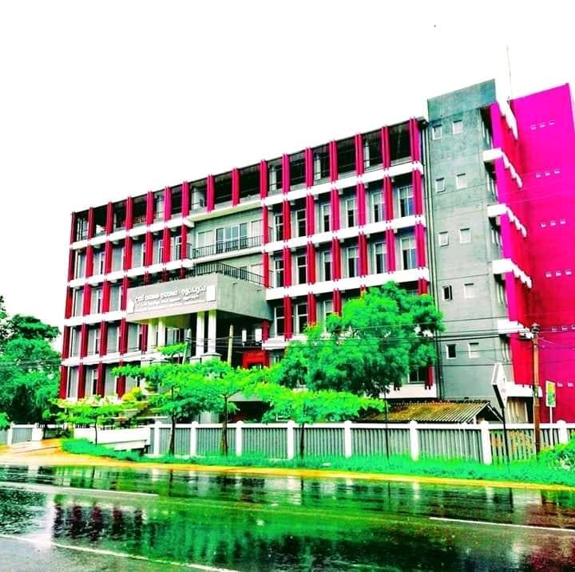

About Us

Our Mission
Creating Excellent Higher National and National Diplomates with Modern Technology for Sustainable Development"

Our Vision
"To Become the Centre of Excellence in Technological Education"
(SLIATE) is one of the leading government institutions in higher education sector in Sri Lanka which has been established by the parliament act no 29 of 1995, and coming under the purview of the Ministry of Higher Education.There are 17 Advanced Technological Institutes operated by SLIATE island wide having conducted a broad range of multi-disciplinary programs targeting at A/L qualified students in Sri Lanka.
Our course..
- Higher National Diploma in Accountancy
- Higher National Diploma in Information Technolgy
- Higher National Diploma in English
- Higher National Diploma in Hospitality & tourism Managment
Opening Hours..
- Monday : 8.00 - 5.00
- Tuesday : 8.00 - 5.00
- Wednesday : 8.00 - 5.00
- Thursday : 8.00 - 5.00
- Friday : 8.00 - 5.00
- Saturday: Closed
- Sunday : Closed
